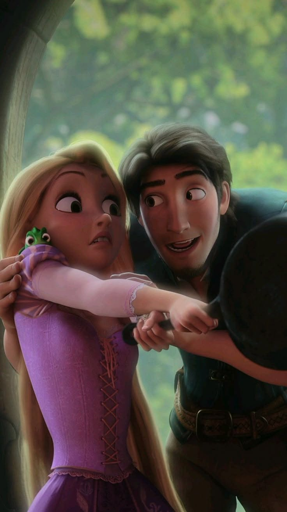
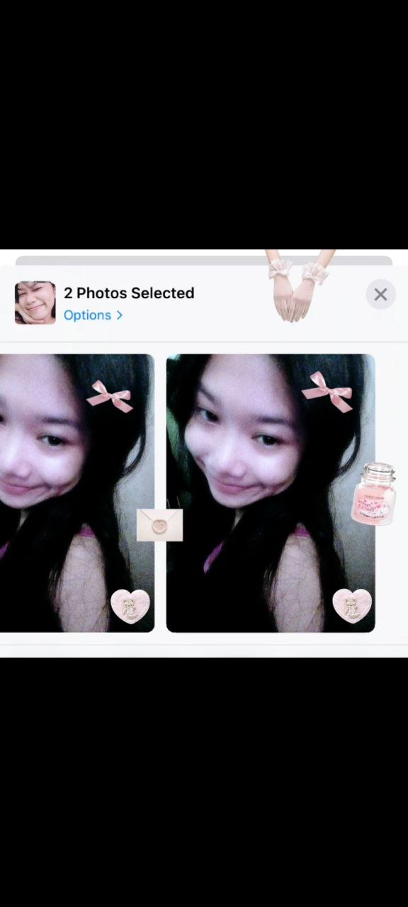
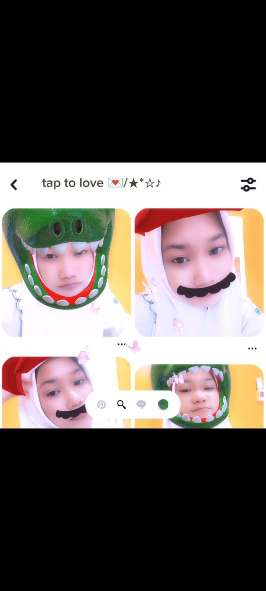
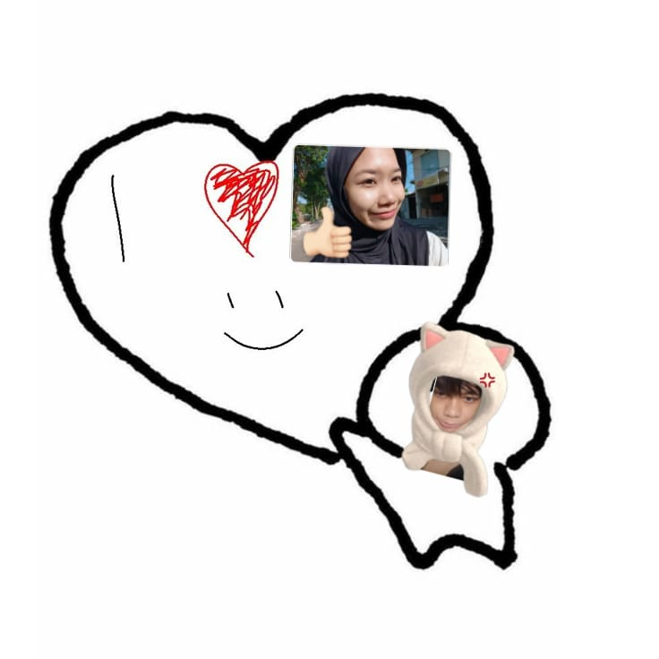

klik yee
"selamat ulang tahun yeah cinta!"
about you, yah lagu ini mengingatkanku padamu disetiap liriknya. ntahlah, kenapa setiap dengar lagu ini selalu ada kamu di fikiranku.

cantik benerrr
huhh, inget gak kita awal kenalanya dimana? wkwkw dari aku yang chat duluan langsung ngejak mabar epep!! dengan emote tengkorak wkwkwk. terus awal gajadi mabar gara gara kamu badmood. tapi yadah dehh, kamu main epep karena kamu kangen main epepp. huhh dari begituuu sampek bahas saham, ekonomi terus kita deket dehh. memang sih kita gak pacaran, tapi kek orang pacaran, disitu aku anggep kmu udah kayak pacar sendiri lohya. aku masih simpan chat kita dari awal kenalan ahhahaha, tiap malem capek pulang kerja gituu atau lagi duduk duduk di tepi pantai yang sering kamu dudukin, aku baca chat kitaa. aku jugaa simpen utuh fotomuu yaa sama kayak dulu, aku lihatin buat nemenin hari hari kuu. itu aja singkat nya yee kebanyakan gak kuat wwkkw

asiknyaa 💖
maaf yah aku naif, aku minta maaf di september 23 2025 aku ninggalin kamu. aku ngelakuin itu karena aku takut kamu nge stuck denganku, aku saat itu bener bener hampir nyerah buat usaha lagi, karena bankrut di 18 april. masih inget kan? yang dulu punya karyawan sampek pailid hahaha, tapii yasudahlah. aku mulai saat itu aku mulai memikirkan, kalo tika gak sama aku, apakah dia gapapa? keknya bisa deh lebih sabar lagi, kalo dia sama cowo lain terus salah pergaulan gimana? terus kalo dia nyerah gak ada yang ngajari gimana? aku siapin semuanya buat kamu, aku buatin kamu chanel, ai, aku kasih gmail pribadiku yang bahkan itu gmail kesambung sama bank aku nyimpen duit!!. intinyaa, aku ninggalin kamu karena diriku yang lagi bingung, aku gamau kamu susah denganku, aku gamau kamu nge stuck denganku, aku gamau kamu gak bahagia sama aku. tapi karena keputusan itu, jujur aku sedih banget harus kangen kamu, aku gatahan buat hubungin kamuu, tapi cukup. sekarang aku udah kerja di lingkungan yang baik orangnyaa, dengan gaji umk sidoarjo wkwkw. yah meskipun umk, bersyukur aja dehh. aku dibagian picker, grade 3 loh! aku langsung naik ke picker tanpa perlu setahun kerja. akuu sekarang udah ikhlas, udah bisa merelakan kamu. tapi kalo cinta masihh, masih kok tapii enggak dehh. kamu kejarlah dulu universitas impian kamu yang kamu ceritain saat itu ke aku. tapii meskipun nggak dapet, gamasalah kokk aku selalu yang jadi pertama yang tepuk tangan huhh!! selalu akuu itu ngawasin kamu wkwkw, aku selaluu awasin kamu.

Always Together 🔒
diusia kamu saat ini yah, aku ucapin. selamat ulang tahun yaaa, maap telat ngirimnya, sibuk man wkwkwk. tapii nantii, tahun depan insyaallah aku ehemmm. ada dehhhh, gakkk gausah mikir yang aneh aneh, kalo udah kuliah bikin o story biar aku tahu. nantii ehem, kamu inget gak janjiku dulu apaa?? yah itu.. semoga panjang umur, sehat selalu, semangat teruss, rezekinya lancarr, nikahnya sama akuu ehem. candaa wkwkk sementara ini dulu yahhh dari aku, semoga kita bisa ketemu di suatu kebetulann. ehh btw aku sering duduk2 ditempat kamu duduk duduk wkwkw, ademm dan agak sedikit galau keinget kamuu wwkwkw. tapi ahhh ayokk kita berjuang untuk diri sendiri aja duluu sampek mantep lah intinyaa. dengerin yaa pesan suaraku nantii, see yaa tikaaa!
"to the bone"